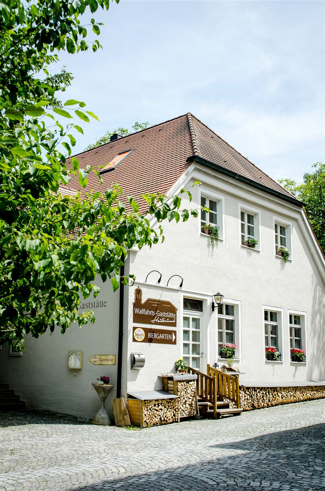
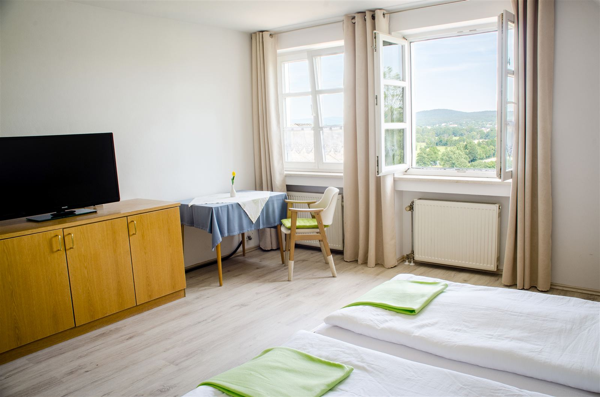
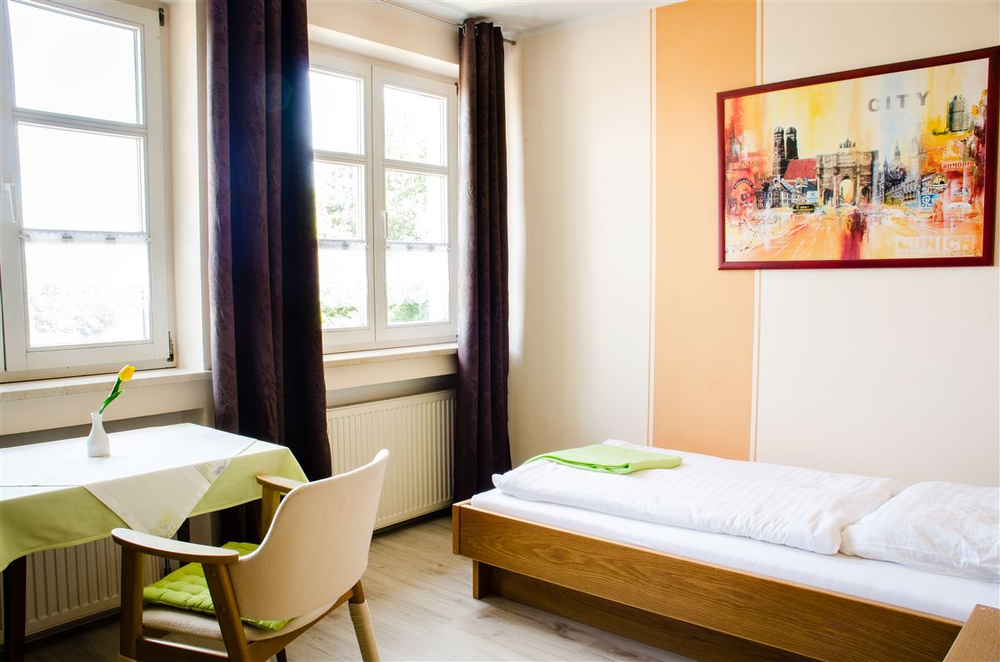

Wallfahrt · Wirtshaus · Bayerischer Wald
Heilbrünnl
Ein Ort, an dem seit 1668 eine Quelle Geschichten erzählt. Wirtshaus, Biergarten und Zimmer direkt an der Rokoko-Wallfahrtskirche über dem Regental.

Grüß Gott
Ein Gasthof mit einer Quelle als Herz
Am Fuß der Wallfahrtskirche Heilbrünnl, hoch über dem Regental, liegt unser Haus an einem der stillsten und zugleich meistbesuchten Plätze der Region. Pilger, Wanderer und Familien aus dem ganzen Bayerischen Wald kehren hier ein – zum Essen, zum Verweilen, zum Ankommen.
Direkt nebenan: eine Rokokokirche aus dem Jahr 1730, gebaut über einer Quelle, der seit Jahrhunderten heilende Kraft nachgesagt wird.
Warum Heilbrünnl
Ein Haus, sechs gute Gründe
Zwischen Wallfahrt und Wirtshaus, zwischen Wald und Regental – Heilbrünnl vereint Geschichte, Gastfreundschaft und Aussicht an einem Ort.
Seit 1668
Direkt neben der Rokokokirche mit ihrer sagenumwobenen Heilquelle – ein Ort mit über 350 Jahren Geschichte.
Biergarten mit Weitblick
Unter alten Bäumen mit Blick über das Regental – an warmen Tagen der schönste Platz weit und breit.
Bayerische Hausmannskost
Deftige Schmankerl, frisch zubereitet – nach Rezepten, die bei uns Tradition haben.
Zimmer mit Panoramablick
Helle, moderne Doppelzimmer mit Blick über Roding und das Regental – ruhig und komfortabel.
Feiern & Anlässe
Von der Taufe bis zur Hochzeit: Wir richten Ihre Feier mit Herz und Weitblick aus.
Direkt am Pilgerweg
Ausgangspunkt für Wanderungen, den Kreuzweg zur Kirche und Ausflüge in den Bayerischen Wald.
*Montag Ruhetag – Di–So 10:00–22:00 Uhr.
I. Die Legende
Ein Hirte, ein Bild, eine Quelle
Der Überlieferung nach entdeckte ein Hirte in einer Quelle ein Marienbild – doch jedes Mal, wenn er danach griff, entzog es sich seiner Hand.
II. Die Prozession
Der Pfarrer von Roding
Erst dem Pfarrer von Roding gelang es, das Bild in einer feierlichen Prozession aus der Quelle zu heben und in einem Bildstock zu bergen.
III. Die erste Kapelle
Zu klein für die Pilger
An der wundertätigen Quelle entstand 1668 eine erste Kapelle. Schon 1684 musste sie dem wachsenden Ansturm der Pilger weichen und wurde erweitert.
IV. Die Kirche von heute
Die Quelle im Marmorbecken
Die heutige Rokokokirche mit ihrem Zwiebelturm ersetzte die Kapelle. Bis heute sammelt sich das Quellwasser in einem Marmorbecken im Inneren – man sagt ihm heilende Wirkung nach, besonders für die Augen.

Küche & Genuss
Hausmannskost, wie sie schmecken soll
Deftige, regionale Küche mit frischen Zutaten – vom Zwiebelrostbraten über Flammkuchen bis zum bayerischen Braten-Sonntag. Dazu ein kühles Bier vom Fass, serviert im Wirtshaus oder im Biergarten mit Blick ins Tal.
Übernachten
Ankommen, wo andere Urlaub machen
Helle, moderne Zimmer mit Panoramablick über das Regental und die Türme von Roding.

Doppelzimmer Übernachtung
Panoramablick über das Regental und die Dächer von Roding.
- Nichtraucher
- Eigenes Bad

Einzelzimmer Übernachtung
Praktisch für Einzelreisende, Wanderer und Pilger auf der Durchreise.
- Nichtraucher
- Eigenes Bad

Feiern bei uns
Ihr Fest, unser Haus
Ob Hochzeit, Kommunion, Firmenfeier oder Wallfahrt großer Gruppen – wir stellen unsere Räume für Ihre Festlichkeiten zur Verfügung und kümmern uns um alles Weitere.
Anfahrt & Kontakt
Wir freuen uns auf Sie
Direkt an der Wallfahrtskirche Heilbrünnl, wenige Autominuten vom Zentrum Roding.
- Heilbrünnl 293426 Roding, Bayern
- 09461 9147463Jetzt anrufen
- info@heilbruennl.deFür Anfragen & Reservierungen
| Montag | Ruhetag |
| Dienstag – Sonntag | 10:00 – 22:00 Uhr |